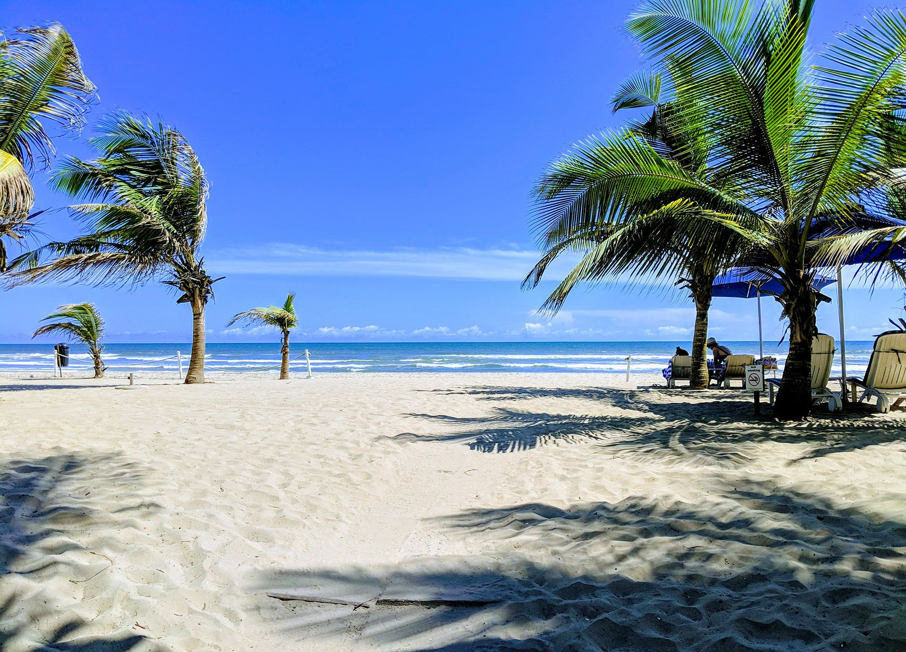

Why Accra?
Accra, the city of golden beaches
Accra is a city where local traditions turn the celebration of life—and the afterlife—into world-class art. In the vibrant coastal suburb of Teshie-Nungua, local craftsmen are famous for creating "fantasy coffins" intricately shaped like cars, fish, airplanes, or even giant chili peppers to honour a person's life passions. The lively atmosphere continues onto the shores of Labadi Beach, where weekends come alive with horseback riding, energetic drumming, and fresh seafood along the Atlantic.
If you want to step directly into Accra's storied past, the coastal neighbourhood of Jamestown is where the city's modern narrative truly began. Originally emerging in the 17th century around colonial trading forts, this historic district is famous for its striking, red-and-white striped Jamestown Lighthouse which towers 28 meters above the Atlantic. Today, the area is a beautiful testament to resilience, functioning as a bustling Ga fishing community where the historic streets double as open-air canvases for vibrant street art.